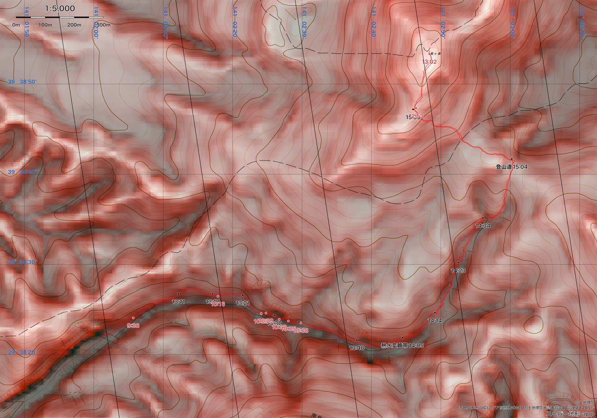
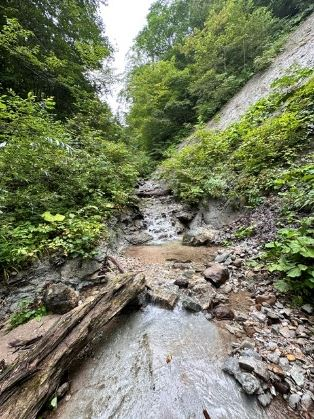
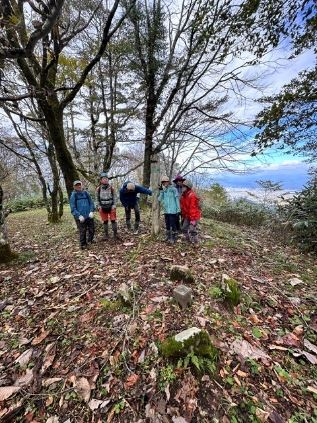
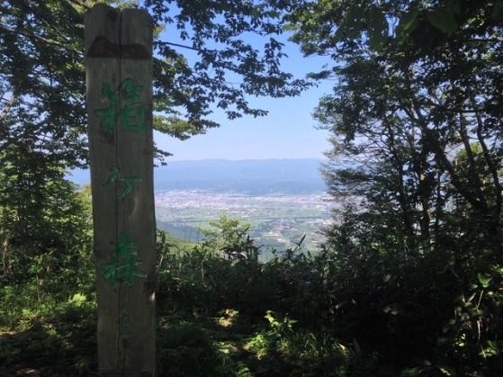

開催概要
| 日時 | 10月4日(日) 9:00〜16:00 |
|---|---|
| 場所 | 都南つどいの森 〜 箱ヶ森（はこがもり） |
| 内容 | つどいの森の西側、雫石町安庭に流れる矢櫃川滝ノ沢をキノコを採りながら沢登りし、箱ヶ森を目指します。やぶ漕ぎはほとんどありません。 |
| 対象 | 岩手県内在住の方 |
| 定員 | 12人（抽選） |
| 費用 | 1,000円（材料費・保険代等） |
| 申し込み | 9月24日(木曜日)12:00から、電話または応募フォームで受け付け 応募フォームを開く → |
| 問い合わせ | 都南つどいの森 019-637-0877 |
※定員に達している場合があります。参加をご検討の方は、まずお電話でお問い合わせください。
当日の写真集（2026年10月4日）
今日はお疲れさまでした。ヤブ漕ぎはほとんどないと書きましたが、倒木の多さにはヤブ漕ぎに匹敵するほどの体力消耗を強いられましたね。割と簡単に行けるようなことを書いてその実、困難な沢歩きになったことをお詫びします。
川村
当日の写真を撮影順に並べています。写真をクリックすると大きく表示されます。左上の丸をクリックして選んだ写真は、まとめてダウンロードできます。
※ 複数枚をまとめてダウンロードするとき、ブラウザが「複数のファイルのダウンロードを許可しますか」と確認することがあります。許可すると選んだ枚数ぶん保存されます。
GPSトラックデータ（GPX）
2025年10月13日の滝ノ沢〜箱ヶ森トラック
本日ではなく、昨年同じルートを歩いたときの記録です。カシミール3D、スーパー地形、ヤマレコなどGPXを読み込めるアプリでご覧いただけます。
昨年歩いたルート
2025年10月13日に同じルートを歩いたときの記録です。沢沿いに高度を上げ、箱ヶ森の山頂へ。下山は登山道を使っています。
2025年10月13日 9:35発〜16:17着のGPSトラック（509点）から算出。当日の進み方や天候により所要時間は変わります。
赤色立体地図で見るルート

赤色立体地図 ©アジア航測株式会社／国土地理院承認 作図：スーパー地形
赤色立体地図とは
航空レーザ測量で得られた細かな地形データから作られる、地形の凹凸がひと目で立体的に読み取れる地図です。アジア航測株式会社が開発した表現手法で、次の2つを重ねて色にしています。
- 赤の濃さ｜斜面の傾きを表します。急なところほど赤が濃くなります
- 明るさ｜尾根と谷を表します。尾根は明るく、谷は暗く沈みます
一般的な陰影図は光を当てる向きを決めて描くため、光の当たらない斜面は凹凸が読み取りにくくなります。赤色立体地図には光の向きがないので、どちらを向いた斜面でも同じように判読できます。沢筋の刻まれ方や小さな崖、崩れた跡まで地図の上で追えるので、沢を登るルートの下見に向いています。
ルートを3Dで見る
GPSトラックを地形の上で3D再生した動画です。沢がどのように山頂へ続いているかが分かります。
昨年の様子

滝ノ沢の登路（沢登り）

山頂近くの尾根にて

箱ヶ森山頂と山頂からの眺め
熱水変質帯って？
マグマに由来する高温の熱水が、地下100〜1000mほどの深さで岩石に触れると、岩石をつくっている鉱物の成分が化学的に変わります。これが熱水変質作用です。変質した岩石からはカリウムやナトリウム、カルシウムなどが溶け出し、代わりにカオリナイトやパイロフィライトといった鉱物ができます。岩はもろく崩れやすくなり、色合いも変わります。
このルートでは、その一帯を通過する地点が地図に記されています。
なお、沢登りでいう「ナメ」は、なめらかな岩盤が露出した沢床のことを指す言葉です。
詳しい解説：熱水変質作用（倉敷市立自然史博物館）